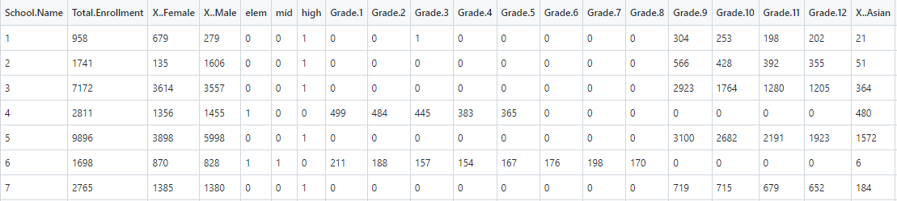

Data Cleaning
To answer the data science questions that I created, large size of labeled or unlabeled, qualitative or quantitative, and record or text data were found through searching datasets online, using APIs, etc. These raw data are messy and contains lots of use less information, so they will be initially cleaned to prepare for future subsetting, normalization, transformation, feature generation, remapping etc.
Students Enrollment 2015-2020 Dataset
Download Raw Data

This raw dataset contains the student demographic and enrollment data of the schools in the United States from 2015-2020. The raw dataset contains a total of 9096 rows and 39 columns, in which lots of these columns are either useless such as the School DBN, the enrollment of each year, and the proportions of genders and races in the enrollments (that can be calculated since we have the total enrollment numbers). So my first step is to remove these unnecessary columns.
After the initial step, the column numbers reduced to 22. Since there are mostly five rows of data for each school as their 5 years
of enrollment data, I plan to combine and have one row for each school (using aggregate function in R). To do this, I need the entries
to be numeric to groupby and sum up. Checking the type of each column, the column "Poverty" contains mostly numbers but is actually
character type, so I removed the rows that has characters as entries and converted this column to numeric type.
This resulted in the removal of 905 rows in the dataset, which means that about 10% of data was lost.
Then, the dataset will be aggregated by school names, which created a new dataframe with 1794 observations of 22 variables. The school names were renamed using the index of the dataframe to save space. The check on missingvalues at this time shows that there are no missing values. However, the schools in the dataframe do not cover all the grades, so I created labels that indicates the schools to be "elementary", "middle", or "high" schools, and will use these labels in later analyses.
Now the cleaned 2015-2020 enrollment dataset has 1794 rows and 25 columns, and will be ready for future subsetting, feature generation etc. for the supervised or unsupervised models. Codes
